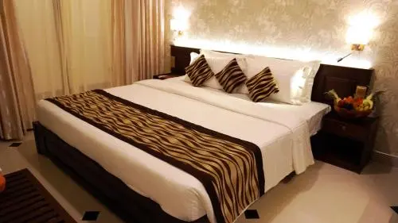

Hotels in Kandy>
Cafe Aroma Inn

Café Aroma Inn is situated in Kandy, only 100 m from the sacred Temple of the Tooth Relic. It has comfortable rooms with air conditioning and private bathrooms.
+94 81 222 9950/51
VISIT SITE
USD 17.36 onwards per night
Earl's Regent Hotel
Earl's Regent, nestled in the greenery of Kandy's ancient kingdom, is the perfect Kandy hotel that gets to the heart of our authentic Kandyan heritage.
Throughout your stay at your residence in the hills, you will be treated with the utmost hospitality and comfort.
+94 81 222 1144
VISIT SITE
USD 46.79 onwards per night
The Golden Crown
Whether you're visiting the Hill Capital on your own, as part of an outdoorsy family trip, or as a romantic getaway, this five star hotel is the ideal accomocation
+94 81 224 4000
VISIT SITE
USD 83.65 onwards per night